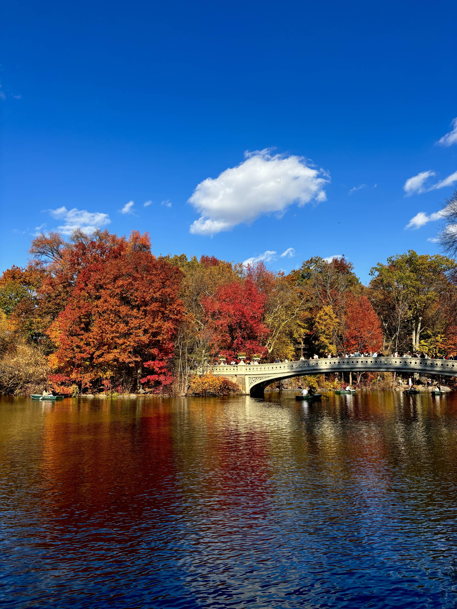

🌿 Park
Central Park
843 acres of green in the heart of Manhattan — perfect for studying, jogging, rowing on the lake, or simply unplugging from the city buzz. Visit during fall foliage season for a truly unforgettable experience just a subway ride away.